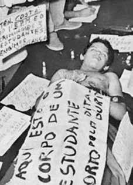

Edson
Luiz
Lima
Souto
BIOGRAFIA
Estudante secundarista brasileiro assassinado por policiais militares que invadiram o restaurante Calabouço, no centro do Rio de Janeiro, no dia 28 de março de 1968, durante uma manifestação estudantil. Edson tinha 18 anos e era um dos 300 estudantes que jantavam no local. Outro deles, Benedito Frazão Dutra, também ferido a bala, foi levado para o hospital, mas não resistiu ao ferimento e morreu. Os estudantes conseguiram resgatar o corpo de Edson Luís e o carregaram em passeata pelo centro do Rio até as escadarias da Assembleia Legislativa, na Cinelândia, onde foi velado.
A autópsia foi feita no próprio local, sob o cerco da Polícia Militar e de agentes do Dops. Do velório até a missa, realizada na Igreja da Candelária, em 2 de abril, foram mobilizados protestos em todo o país. Em São Paulo, 4 mil estudantes fizeram uma manifestação na Faculdade de Medicina da Universidade de São Paulo (USP). Também foram realizadas manifestações no Centro Acadêmico XI de Agosto, da Faculdade de Direito do Largo São Francisco, na Escola Politécnica da USP, e na Pontifícia Universidade Católica de São Paulo (PUC-SP).
No Rio de Janeiro, a cidade parou no dia do enterro. Para expressar seu protesto, os cinemas da Cinelândia amanheceram anunciando três filmes: “A noite dos Generais”, “À queima roupa” e “Coração de luto”. Com faixas, cartazes e palavras de ordem, a população protestava: “Bala mata fome?”, “Os velhos no poder, os jovens no caixão”, “Mataram um estudante. E se fosse seu filho?” e “PM = Pode Matar”. Edson Luís foi enterrado ao som do hino nacional brasileiro, cantado pela multidão. Na manhã de 4 de abril, foi realizada a missa de sétimo dia de Edson Luís na Igreja da Candelária. Ao término da cerimônia religiosa, as pessoas que deixavam a igreja foram cercadas e atacadas pela cavalaria da polícia militar a golpes de sabre. Dezenas de pessoas ficaram feridas.
Brazilian high school student murdered by military police officers who invaded the Calabouço restaurant, in the center of Rio de Janeiro, on March 28, 1968, during a student demonstration. Edson was 18 years old and was one of 300 students who had dinner there. Another of them, Benedito Frazão Dutra, also injured by a bullet, was taken to the hospital, but he succumbed to the wound and died. The students managed to rescue Edson Luís' body and carried him on a march through the center of Rio to the steps of the Legislative Assembly, in Cinelândia, where he was laid to rest.
The autopsy was carried out on site, under siege by the Military Police and Dops agents. From the wake to the mass, held at the Candelária Church, on April 2, protests were mobilized across the country. In São Paulo, 4 thousand students demonstrated at the Faculty of Medicine of the University of São Paulo (USP). Demonstrations were also held at the XI de Agosto Academic Center, at the Largo São Francisco Law School, at the USP Polytechnic School, and at the Pontifical Catholic University of São Paulo (PUC-SP).
In Rio de Janeiro, the city stopped on the day of the funeral. To express their protest, Cinelândia cinemas opened the morning announcing three films: “The Night of the Generals”, “At Close Range” and “Heart of Mourning”. With banners, posters and slogans, the population protested: “Bullets kill hunger?”, “The old people in power, the young people in the coffin”, “They killed a student. What if it was your son?” and “PM = Can Kill”. Edson Luís was buried to the sound of the Brazilian national anthem, sung by the crowd. On the morning of April 4, Edson Luís' seventh day mass was held at the Candelária Church. At the end of the religious ceremony, people leaving the church were surrounded and attacked by military police cavalry with saber blows. Dozens of people were injured.
Estudiante de secundaria brasileño asesinado por policías militares que invadieron el restaurante Calabouço, en el centro de Río de Janeiro, el 28 de marzo de 1968, durante una manifestación estudiantil. Edson tenía 18 años y fue uno de los 300 estudiantes que cenaron allí. Otro de ellos, Benedito Frazão Dutra, también herido de bala, fue trasladado al hospital, pero sucumbió a la herida y murió. Los estudiantes lograron rescatar el cuerpo de Edson Luís y lo llevaron en una marcha por el centro de Río hasta las escaleras de la Asamblea Legislativa, en Cinelândia, donde fue sepultado.
La autopsia se realizó en el lugar, bajo asedio de la Policía Militar y agentes del Dops. Desde el velorio hasta la misa, celebrada en la Iglesia Candelária, el 2 de abril, se movilizaron protestas en todo el país. En São Paulo, 4 mil estudiantes se manifestaron en la Facultad de Medicina de la Universidad de São Paulo (USP). También se realizaron manifestaciones en el Centro Académico XI de Agosto, en la Facultad de Derecho Largo São Francisco, en la Escuela Politécnica de la USP y en la Pontificia Universidad Católica de São Paulo (PUC-SP).
En Río de Janeiro, la ciudad se detuvo el día del funeral. Para expresar su protesta, los cines Cinelândia abrieron la mañana anunciando tres películas: “La noche de los generales”, “A corta distancia” y “Corazón de luto”. Con pancartas, carteles y consignas, la población protestó: “¿Las balas matan el hambre?”, “Los viejos en el poder, los jóvenes en el ataúd”, “Mataron a un estudiante. ¿Y si fuera tu hijo?”. y “PM = Puede matar”. Edson Luís fue enterrado al son del himno nacional brasileño, cantado por la multitud. En la mañana del 4 de abril se celebró la misa del séptimo día de Edson Luís en la Iglesia Candelária. Al finalizar la ceremonia religiosa, las personas que salían de la iglesia fueron rodeadas y atacadas por caballería de la policía militar a golpes de sable. Decenas de personas resultaron heridas.
CIRCUNSTÂNCIAS DA MORTE
Edson Luiz Lima Souto morreu no dia 28 de março de 1968, após ter sido atingido por disparo de arma de fogo durante uma manifestação no interior do restaurante Calabouço. Em 1967, o restaurante havia sido demolido para dar lugar a um trevo rodoviário no Aterro do Flamengo e, desde então, estava sendo reconstruído em outro local. Ao ser reaberto, o Calabouço estava inacabado, com “chão de terra batida” e, além disso, os usuários passaram a ser selecionados a fim de evitar a “infiltração de elementos estranhos”. No dia 28 de março de 1968, os estudantes ocuparam a nova sede do restaurante no intuito de reivindicar a aceleração e o término das obras, melhores condições de higiene, a qualidade da alimentação e a garantia de que todos os estudantes pudessem ter acesso ao restaurante. O local foi ocupado por cerca de 25 policiais militares que usaram armas de fogo contra os manifestantes. Edson Luiz foi atingido por um tiro no peito e morreu imediatamente. Os estudantes que ocupavam o restaurante Calabouço não permitiram que o corpo fosse levado ao Instituto Médico-Legal (IML) e o conduziram para a Santa Casa de Misericórdia, vizinha ao restaurante, e, depois de confirmada a morte, para a Assembleia Legislativa do Rio de Janeiro. O corpo do jovem foi velado durante toda a noite e a Assembleia transformou-se em local de peregrinação, mobilizando milhares de estudantes, intelectuais, artistas e trabalhadores, que acenderam velas em suas escadarias. Durante o velório, outras pessoas foram feridas na praça Marechal Floriano em decorrência da violência policial. No dia 29 de março, 50 mil pessoas acompanharam o funeral de Edson Luiz. O jovem foi sepultado ao som do hino nacional, cantado pela multidão que também entoava um grito de protesto em coro: “um estudante foi assassinado, poderia ser seu filho…”. De acordo com o Jornal do Brasil, de 30 de março de 1968, a morte gerou a manifestação de diversos deputados cariocas contra a ação da Polícia Militar (PM) do estado do Rio de Janeiro. Além do pronunciamento de deputados, seguiram-se passeatas, comícios, manifestações e novas prisões em várias partes do Brasil, como relatou o jornal O Cruzeiro de 13 de abril de 1968. A missa de sétimo dia, realizada na igreja da Candelária, no Rio de Janeiro (RJ), transformou-se em protesto nacional, gerando prisões e mortes de outros estudantes em diferentes estados do país. Segundo Zuenir Ventura no livro 1968: o ano que não terminou, centenas de fuzileiros, agentes do Departamento de Ordem Política e Social (DOPS) e soldados da PM procuraram dispersar, atemorizar e prender pessoas que chegavam para a missa. Ao final da cerimônia, 15 padres saíram à frente da multidão, seguidos pelos que assistiram à missa. O cortejo “caminhava lentamente em direção a um muro de cavalos indóceis e cavalarianos irascíveis”. O Jornal do Brasil de 30 de março de 1968 afirmou, em uma de suas manchetes, que peritos provaram que “a polícia não atirou só para o alto” e que alguns tiros visaram os próprios estudantes. Primeiro, a polícia teria invadido a sala de refeições, atirando para o ar, e depois nas pessoas. Segundo Ziraldo, ao descrever o incidente assistido da janela de seu local de trabalho, “os estudantes fugiram em polvorosa das proximidades, e neste momento, eu vi um policial em posição característica de tiro e (…) alguém caindo”. Posteriormente, o auto de exame cadavérico do corpo de Edson Luiz demonstrou que a trajetória do tiro teria sido orientada da esquerda para a direita, de cima para baixo, fato que revelaria a clara intenção de matá-lo. De acordo com o jornal da União Nacional dos Estudantes (UNE) de 1968, a repressão policial era feita a qualquer manifestação de estudantes, mesmo que fosse por pauta específica. Segundo o periódico, o governo havia compreendido o caráter político das manifestações estudantis específicas e sua importância na organização dos estudantes. Segundo o testemunho do ex-presidente da Frente Unida dos Estudantes do Calabouço (FUEC), Elinor Mendes Brito, para a CEMDP, havia uma enorme desigualdade entre a defesa dos estudantes, armados com garfos, facas, colheres, copos, bandejas, canetas, livros e cadernos e a Polícia, que cercou e invadiu o restaurante “dando ordem de prisão às lideranças, espalhando o terror e o medo, quando mais de 300 estudantes jantavam (…), quando entra a tropa de choque atirando (…). Foi uma verdadeira operação de guerra”. O relatório do pedido de vistas do caso, feito pela CEMDP, apontou que passada a comoção social com a morte de Edson Luiz, o governador do Rio de Janeiro, Negrão de Lima, mandou prender os integrantes do Batalhão Motorizado e demitiu o general Niemeyer da Superintendência da Polícia da Guanabara. As prisões e a demissão podem ser entendidas como evidências dos excessos cometidos pela polícia com relação às manifestações estudantis. Em 1997, ao defender o enquadramento legal das vítimas das passeatas na Lei no 9.140/1995, o advogado Ricardo Antônio Dias Baptista registrou: os estudantes não ofereciam (…) perigo de reação. O Estado poderia tê-los prendido, optou pelos bárbaros assassinatos. (…) Disparar tiros, rajadas de metralhadoras em manifestações estudantis realizadas em logradouros públicos é mais que um desejo de matar. Expressa vontade de provocar extermínio. A equipe da Comissão Nacional da Verdade (CNV) identificou dois documentos no Arquivo Nacional do Rio de Janeiro que apontam o tenente Alcindo Costa como autor do disparo que vitimou Edson Luiz. Em um discurso no Congresso Nacional, em 30 de março de 1968, o deputado Márcio Moreira Alves afirma que o governador Negrão de Lima mandou abrir o tradicional inquérito, desta vez pedindo um representante da Ordem dos Advogados para acompanhá-lo. Anunciou também o afastamento da Secretaria de Segurança, General Oswaldo Niemeyer, que teve a petulância e a coragem de, diante de um morto e perante representantes do povo, dizer que a tropa atirara porque estava em potência de fogo inferior e contra ela eram jogadas pedras. O tenente Alcindo Costa, Comandante do Destacamento que metralhou os estudantes – e segundo testemunhas – autor dos disparos que vitimaram Edson de Lima Souto está preso e o inquérito foi instaurado. Em matéria da revista Fatos e Fotos de 1968, citada pela CEMDP no dossiê de documentos de Edson, também foi feita alusão ao tenente Alcindo Costa como autor dos disparos que mataram Edson Luiz, o estudante Benedito Frazão Dutra e o comerciário Telmo Matos Henrique. No dia 8 de maio de 2014, em depoimento prestado à Comissão Estadual da Verdade do Rio de Janeiro (CEV-RJ), Elinor Brito afirmou a relação entre o assassinato de Edson Luiz e a ação repressiva exercida pelo regime militar, que entendia as lutas estudantis como ameaças à ordem estabelecida, e que, por esse motivo, deveriam ser combatidas por meio de prisões e mortes. Os restos mortais de Edson Luiz Lima Souto foram enterrados no cemitério São João Batista, no Rio de Janeiro (RJ).
Edson Luiz Lima Souto died on March 28, 1968, after being hit by a gunshot during a demonstration inside the Calabouço restaurant. In 1967, the restaurant had been demolished to make way for a road interchange at Aterro do Flamengo and, since then, it was being rebuilt in another location. When it reopened, the Dungeon was unfinished, with a “dirt floor” and, in addition, users began to be selected in order to avoid the “infiltration of foreign elements”. On March 28, 1968, students occupied the restaurant's new headquarters in order to demand the acceleration and completion of works, better hygiene conditions, quality of food and the guarantee that all students could have access to the restaurant. The location was occupied by around 25 military police officers who used firearms against the protesters. Edson Luiz was shot in the chest and died immediately. The students who occupied the Calabouço restaurant did not allow the body to be taken to the Instituto Médico-Legal (IML) and took it to Santa Casa de Misericórdia, next to the restaurant, and, after confirming death, to the Legislative Assembly of Rio de Janeiro. The young man's body was kept in state throughout the night and the Assembly became a place of pilgrimage, mobilizing thousands of students, intellectuals, artists and workers, who lit candles on its steps. During the wake, other people were injured in Marechal Floriano square as a result of police violence. On March 29, 50 thousand people attended Edson Luiz's funeral. The young man was buried to the sound of the national anthem, sung by the crowd who also chanted a chorus of protest: “a student was murdered, it could have been your son…”. According to Jornal do Brasil, on March 30, 1968, the death led to a demonstration by several Rio de Janeiro deputies against the actions of the Military Police (PM) of the state of Rio de Janeiro. In addition to the speeches by deputies, marches, rallies, demonstrations and new arrests followed in various parts of Brazil, as reported by the newspaper O Cruzeiro on April 13, 1968. The seventh-day mass, held at the Candelária church, in Rio de Janeiro (RJ), turned into a national protest, leading to arrests and deaths of other students in different states of the country. According to Zuenir Ventura in the book 1968: the year that did not end, hundreds of marines, agents from the Department of Political and Social Order (DOPS) and soldiers from the PM sought to disperse, frighten and arrest people who arrived for mass. At the end of the ceremony, 15 priests came out at the front of the crowd, followed by those who attended the mass. The procession “walked slowly towards a wall of restless horses and irascible cavalrymen”. The Jornal do Brasil of March 30, 1968 stated, in one of its headlines, that experts proved that “the police did not just shoot in the air” and that some shots were aimed at the students themselves. First, the police invaded the dining room, shooting in the air, and then at people. According to Ziraldo, when describing the incident watched from the window of his workplace, “the students fled nearby in an uproar, and at that moment, I saw a police officer in a typical shooting position and (…) someone falling”. Subsequently, the cadaveric examination of Edson Luiz's body demonstrated that the trajectory of the shot would have been oriented from left to right, from top to bottom, a fact that would reveal the clear intention to kill him. According to the newspaper of the National Union of Students (UNE) from 1968, police repression was carried out against any student demonstration, even if it was for a specific agenda. According to the periodical, the government had understood the political nature of specific student demonstrations and their importance in student organization. According to the testimony of the former president of the United Front of Calabouço Students (FUEC), Elinor Mendes Brito, for CEMDP, there was a huge inequality between the defense of the students, armed with forks, knives, spoons, cups, trays, pens, books and notebooks, and the Police, who surrounded and invaded the restaurant “giving arrest orders to the leaders, spreading terror and fear, when more than 300 students were having dinner (…), when the riot police came shooting (…). It was a real war operation.” The report requesting a review of the case, made by CEMDP, pointed out that after the social commotion following the death of Edson Luiz, the governor of Rio de Janeiro, Negrão de Lima, ordered the arrest of the members of the Motorized Battalion and dismissed General Niemeyer from the Guanabara Police Superintendence. The arrests and dismissal can be understood as evidence of the excesses committed by the police in relation to student demonstrations. In 1997, when defending the legal status of the victims of the marches in Law no. 9,140/1995, lawyer Ricardo Antônio Dias Baptista noted: the students did not pose (…) any danger of reaction. The State could have arrested them, it opted for barbaric murders. (…) Firing shots and machine gun bursts at student demonstrations held in public places is more than a desire to kill. Expresses desire to provoke extermination. The National Truth Commission (CNV) team identified two documents in the National Archives of Rio de Janeiro that point to Lieutenant Alcindo Costa as the author of the shooting that killed Edson Luiz. In a speech at the National Congress, on March 30, 1968, deputy Márcio Moreira Alves states that governor Negrão de Lima ordered the traditional inquiry to be opened, this time asking for a representative of the Bar Association to accompany him. He also announced the removal of the Secretary of Security, General Oswaldo Niemeyer, who had the petulance and courage to, in front of a dead man and before representatives of the people, say that the troops had fired because they had inferior firepower and stones were being thrown at them. Lieutenant Alcindo Costa, Commander of the Detachment that machine-gunned the students – and according to witnesses – author of the shots that killed Edson de Lima Souto is arrested and the investigation has been opened. In an article in the magazine Fatos e Fotos from 1968, cited by CEMDP in Edson's dossier of documents, reference was also made to Lieutenant Alcindo Costa as the author of the shots that killed Edson Luiz, the student Benedito Frazão Dutra and the businessman Telmo Matos Henrique. On May 8, 2014, in a statement given to the Rio de Janeiro State Truth Commission (CEV-RJ), Elinor Brito stated the relationship between the murder of Edson Luiz and the repressive action carried out by the military regime, which understood student struggles as threats to the established order, and which, for this reason, should be combatted through arrests and deaths. The remains of Edson Luiz Lima Souto were buried in the São João Batista cemetery, in Rio de Janeiro (RJ).
Edson Luiz Lima Souto murió el 28 de marzo de 1968, tras ser alcanzado por un disparo durante una manifestación en el interior del restaurante Calabouço. En 1967, el restaurante había sido derribado para dar paso a un intercambio viario en Aterro do Flamengo y, desde entonces, se estaba reconstruyendo en otro emplazamiento. Cuando se reabrió, la Mazmorra estaba inacabada, con “suelo de tierra” y, además, se empezó a seleccionar usuarios para evitar la “infiltración de elementos extraños”. El 28 de marzo de 1968 los estudiantes ocuparon la nueva sede del restaurante con el fin de exigir la aceleración y finalización de las obras, mejores condiciones de higiene, calidad de los alimentos y la garantía de que todos los estudiantes pudieran tener acceso al restaurante. El lugar fue ocupado por unos 25 agentes de la policía militar que utilizaron armas de fuego contra los manifestantes. Edson Luiz recibió un disparo en el pecho y murió inmediatamente. Los estudiantes que ocuparon el restaurante Calabouço no permitieron que el cuerpo fuera trasladado al Instituto Médico-Legal (IML) y lo llevaron a la Santa Casa de Misericórdia, al lado del restaurante, y, tras confirmarse la muerte, a la Asamblea Legislativa de Río de Janeiro. El cuerpo del joven fue custodiado durante toda la noche y la Asamblea se convirtió en lugar de peregrinación, movilizando a miles de estudiantes, intelectuales, artistas y trabajadores, que encendieron velas en sus escalinatas. Durante el velorio, otras personas resultaron heridas en la plaza Marechal Floriano como consecuencia de la violencia policial. El 29 de marzo, 50 mil personas asistieron al funeral de Edson Luiz. El joven fue enterrado al son del himno nacional, entonado por la multitud que también entonó un coro de protesta: “un estudiante fue asesinado, podría haber sido tu hijo…”. Según el Jornal do Brasil, el 30 de marzo de 1968, la muerte provocó una manifestación de varios diputados cariocas contra la actuación de la Policía Militar (PM) del estado de Río de Janeiro. Además de los discursos de los diputados, se sucedieron marchas, mítines, manifestaciones y nuevas detenciones en varias partes de Brasil, según informó el diario O Cruzeiro el 13 de abril de 1968. La misa del séptimo día, celebrada en la iglesia de Candelária, en Río de Janeiro (RJ), se convirtió en una protesta nacional, provocando detenciones y muertes de otros estudiantes en diferentes estados del país. Según Zuenir Ventura en el libro 1968: el año que no terminó, cientos de marinos, agentes del Departamento de Orden Político y Social (DOPS) y soldados del PM buscaron dispersar, asustar y arrestar a las personas que llegaban a misa. Al final de la ceremonia, 15 sacerdotes salieron al frente de la multitud, seguidos por los que asistieron a la misa. La procesión “caminó lentamente hacia un muro de caballos inquietos y jinetes irascibles”. El Jornal do Brasil del 30 de marzo de 1968 afirmaba, en uno de sus titulares, que los peritos demostraron que “la policía no sólo disparó al aire” y que algunos disparos iban dirigidos a los propios estudiantes. Primero, la policía invadió el comedor, disparó al aire y luego a la gente. Según Ziraldo, al describir el incidente observado desde la ventana de su lugar de trabajo, “los estudiantes huyeron cerca alborotados, y en ese momento vi a un policía en posición típica de disparo y (…) alguien cayendo”. Posteriormente, el examen cadavérico del cuerpo de Edson Luiz demostró que la trayectoria del disparo habría estado orientada de izquierda a derecha, de arriba a abajo, hecho que revelaría la clara intención de matarlo. Según el diario de la Unión Nacional de Estudiantes (UNE) de 1968, la represión policial se ejercía contra cualquier manifestación estudiantil, así fuera por una agenda específica. Según el periódico, el gobierno había comprendido la naturaleza política de determinadas manifestaciones estudiantiles y su importancia en la organización estudiantil. Según el testimonio de la ex presidenta del Frente Unido de Estudiantes de Calabouço (FUEC), Elinor Mendes Brito, para el CEMDP, había una enorme desigualdad entre la defensa de los estudiantes, armados con tenedores, cuchillos, cucharas, tazas, bandejas, bolígrafos, libros y cuadernos, y la Policía, que rodeó e invadió el restaurante “dando órdenes de arresto a los dirigentes, sembrando terror y miedo, cuando más de 300 estudiantes estaban cenando (…), cuando los antidisturbios llegaron disparando (…). Fue una verdadera operación de guerra”. El informe de revisión del caso, elaborado por el CEMDP, señaló que después de la conmoción social tras la muerte de Edson Luiz, el gobernador de Río de Janeiro, Negrão de Lima, ordenó la detención de los miembros del Batallón Motorizado y destituyó al general Niemeyer de la Superintendencia de Policía de Guanabara. Las detenciones y despidos pueden entenderse como evidencia de los excesos cometidos por la policía en relación con las manifestaciones estudiantiles. En 1997, al defender la condición jurídica de las víctimas de las marchas en la Ley no. 9.140/1995, señaló el abogado Ricardo Antônio Dias Baptista: los estudiantes no presentaban (…) ningún peligro de reacción. El Estado pudo haberlos detenido, optó por asesinatos bárbaros. (…) Disparar tiros y ráfagas de ametralladora en manifestaciones estudiantiles celebradas en lugares públicos es más que un deseo de matar. Expresa deseo de provocar el exterminio. El equipo de la Comisión Nacional de la Verdad (CNV) identificó dos documentos en el Archivo Nacional de Río de Janeiro que señalan al teniente Alcindo Costa como autor del tiroteo que mató a Edson Luiz. En un discurso en el Congreso Nacional, el 30 de marzo de 1968, el diputado Márcio Moreira Alves afirma que el gobernador Negrão de Lima ordenó la apertura de la tradicional investigación, solicitando esta vez que lo acompañara un representante del Colegio de Abogados. También anunció la destitución del secretario de Seguridad, general Oswaldo Niemeyer, quien tuvo la petulancia y el coraje de, frente a un muerto y ante representantes del pueblo, decir que las tropas habían disparado porque tenían inferior poder de fuego y les estaban lanzando piedras. El teniente Alcindo Costa, comandante del Destacamento que ametralló a los estudiantes -y según testigos- autor de los disparos que mataron a Edson de Lima Souto, está detenido y se abre la investigación. En un artículo de la revista Fatos e Fotos de 1968, citado por el CEMDP en el expediente documental de Edson, también se hace referencia al teniente Alcindo Costa como autor de los disparos que mataron a Edson Luiz, al estudiante Benedito Frazão Dutra y al empresario Telmo Matos Henrique. El 8 de mayo de 2014, en declaración ante la Comisión de la Verdad del Estado de Río de Janeiro (CEV-RJ), Elinor Brito planteó la relación entre el asesinato de Edson Luiz y la acción represiva llevada a cabo por el régimen militar, que entendió las luchas estudiantiles como amenazas al orden establecido, y que, por ello, debía ser combatida mediante detenciones y muertes. Los restos de Edson Luiz Lima Souto fueron enterrados en el cementerio de São João Batista, en Río de Janeiro (RJ).